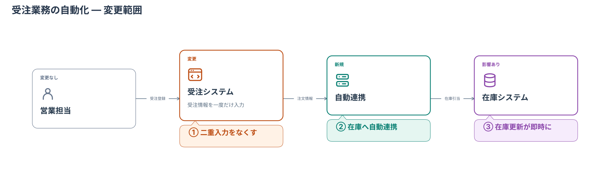
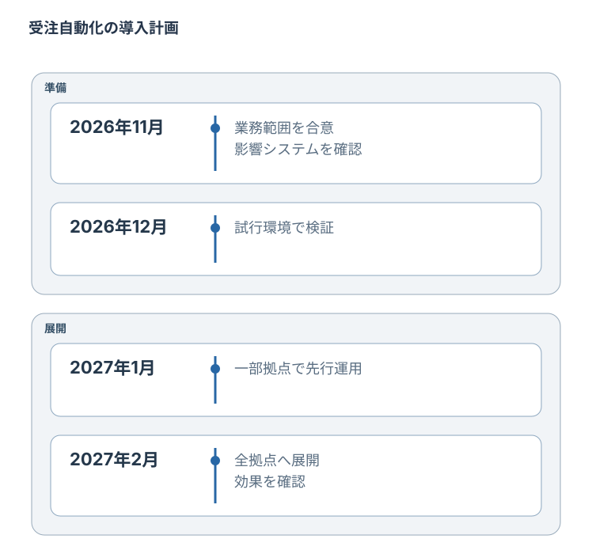
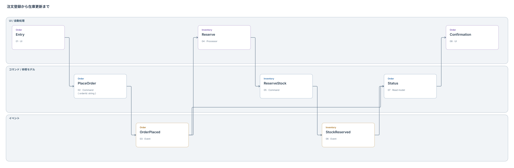
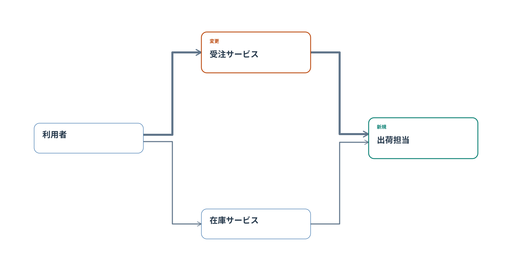
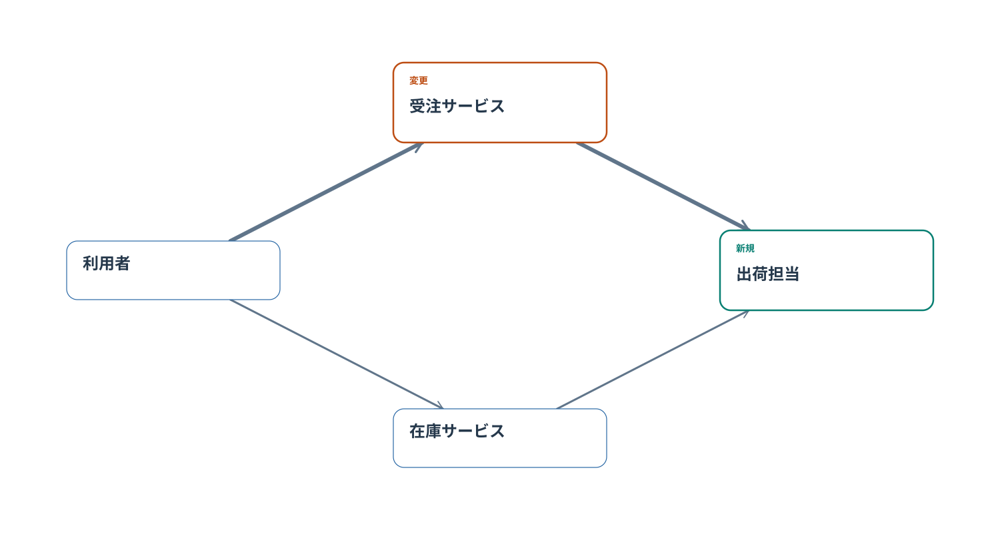
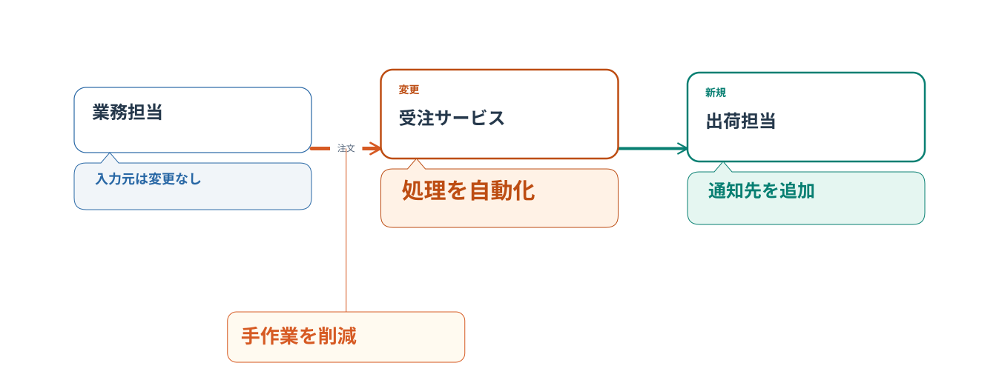

業務側に「何が変わるか」を伝える概略図。導入順を表す年表。情報の変化を追うEvent Modeling。
変更箇所・業務への影響を、大きな文字と吹き出しで。
Mermaid · SVG · PNG

施策・変更の順番を、期間と出来事で整理。

操作・コマンド・イベントを時間の流れに沿って追う。

同じ配置で直角配線と直線接続を比較。主経路は6px、他の線は3px。


コンポーネントと接続への説明、見出しサイズの使い分け。
